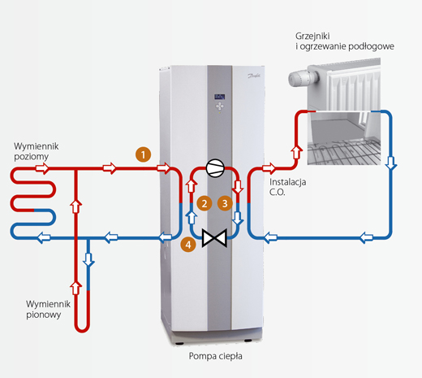
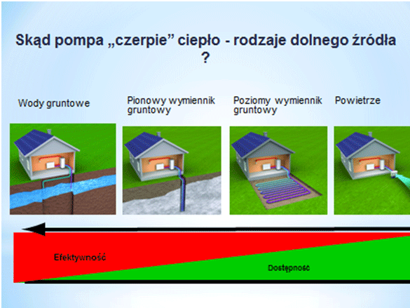
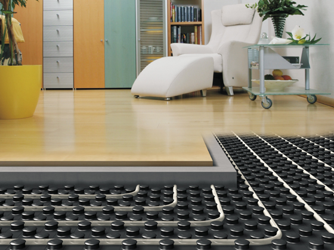

SKONTAKTUJ SIĘ Z NAMI!
Dariusz Jaśkowski
dariuszjaskowski@wp.pl
607-940-532
Kostomłoty Drugie ul.Starowiejska 80
26-085 Miedziana Góra
woj. świętokrzyskie
O NAS
Przedmiotem działania firmy jest profesjonalne doradztwo oraz kompleksowe wykonawstwo
nowoczesnych i energooszczędnych instalacji grzewczych wykorzystujących odnawialne źródła energii.
Oferujemy usługi począwszy od fachowego doradztwa w zakresie doboru najwłaściwszych urządzeń i instalacji, poprzez sprzedaż, montaż i uruchomienie urządzeń renomowanych firm krajowych i zagranicznych.
Oferujemy serwis gwarancyjny oraz pogwarancyjny wykonanych przez nas instalacji.
POMPY CIEPŁA
Dlaczego wybrać pompy ciepła?
Niskie koszty eksploatacji sięgające 1500-2000 PLN/rok (dla domu o pow. ok. 150m2)
- Bezobsługowa instalacja
- Automatyzacja
- Ustawiasz tylko żądaną temperaturę pomieszczenia i wody
- Obsługa przez aplikację w Twoim smartfonie!
- Zimą grzeje - latem chłodzi
- Rekuperator w systemie klimatyzacji
- Funckcja osuszania powietrza
Brak emisji dwutlenku węgla
Bez ryzyka wybuchu czy zatrucia czadem
Nie wymaga oddzielnego pomieszczenia, budowania komina ani dodatkowych systemów wentylacji
od zewnętrznych dostawców energii
Brak składu opału
Bezawaryjna praca pompy, dzięki najnowszym technologiom
Jak to działa? Dowiedz się więcej!
Dlaczego najtaniej?
Największe oszczędności eksploatacyjne (sięgające 7000 PLN/rok) daje zainstalowanie pompy
ciepła
zamiast kotła na olej opałowy lub gaz płynny.
W porównaniu z kotłem na gaz ziemnyróżnica jest mniejsza (ok. 2500-3000PLN).
Nie należy zapomnieć, że niskie koszty eksploatacyjne trzeba
jednak okupić początkowym kosztem inwestycji.
Dlaczego warto?
Niestabilna sytuacja na rynku gazu i innych ropopochodnych nośników energii oraz ich ciągły wzrost cen zmuszają do poszukiwania tańszych, alternatywnych i odnawialnych źródeł energii.
Pompa ciepła jest urządzeniem wykorzystującym odnawialne źródła energii: zasoby energii słonecznej zawarte w środowisku. Jest pod tym względem urządzeniem niezwykle uniwersalnym. Pompę ciepła można porównać do chłodziarki o odwrotnym działaniu. W chłodziarce ciepło jest przenoszone z jej wnętrza na zewnątrz, natomiast w pompie ciepła ciepło zmagazynowane w dolnym źródle jest przenoszone do budynku.
Jak to działa?
- Niezamarzający czynnik (glikol), płynąc w wężownicy [1], odbiera energię cieplną z gruntu, powietrza lub wody.
- W parowniku pompy [2] podgrzany czynnik obiegu dolnego źródła oddaje ciepło zimnemu czynnikowi chłodniczemu obiegu wewnętrznego pompy ciepła. Czynnik chłodniczy podgrzewa się i odparowuje, stając się gazem.
- Gaz zostaje sprężony. Wytworzone w tym procesie ciepło jest przekazywane w skraplaczu [3] do systemu instalacji centralnego ogrzewania budynku.
- Skroplony gaz po przejściu przez zawór rozprężny [4] obniża swoje ciśnienie oraz temperaturę i przepływa do parownika, gdzie ponownie odbiera ciepło od czynnika obiegu dolnego źródła i proces zaczyna się od nowa.
Popularność
Pompa ciepła dostarcza kilkakrotnie więcej energii cieplnej w stosunku do zużywanej energii elektrycznej, a ponadto istnieje możliwość użycia tych samych pomp ciepła do chłodzenia pomieszczeń latem. Instalacja z pompą ciepła to najtańszy sposób pozyskiwania energii cieplnej do ogrzewania domu i ciepłej wody użytkowej. Ponadto, dzięki tym instalacjom można znacząco zmniejszyć emisję dwutlenku węgla do atmosfery, dlatego do rozwoju zastosowań pomp ciepła w Europie przykłada się ogromną wagę. Europa w szybkim tempie przestawia się na ogrzewanie domów pompami ciepła. W ostatnich 5 latach rynek pomp ciepła wzrósł 3-krotnie.
W Szwecji 95% nowo budowanych domów ma pompę ciepła, w Szwajcarii ten wskaźnik wynosi 75%, a Austrii, Niemczech, Finlandii i Norwegii już w co trzecim budowanym domu instaluje się pompę ciepła.
Produkcja ciepłej wody
W momencie gdy czujnik startu przygotowania c.w.u. otrzyma sygnał do rozpoczęcia produkcji ciepłej wody użytkowej, zawór trójdrogowy zmieni kierunek przepływu zasilania do pentli TWS w podgrzewaczu. Produkcja ciepłej wody użytkowej zostanie zatrzymana, gdy ciśnienie na presostacie kontrolnym osiągnie ustawiony poziom.
Skąd pochodzi ciepło?
Pompa ciepła wykorzystuje energię słoneczną zmagazynowaną w głębszych warstwach gruntu (ew. podłożu skalnym). Energia ta służy następnie do ogrzewania budynku i wody użytkowej. Popularne rozwiązanie w przypadku działek o małej powierzchni. Rury znajdują się w jednym lub kilku otworach w gruncie, o głębokości do 100 m.
Wymiennik pionowy
- Możliwość zastosowania na działce o małej powierzchni
- Otwory mają stałą temperaturę w ciągu roku
- Możliwość klimatyzacji (chłodzenie pasywne)
- Większa wydajność niż przy wymienniku poziomym
- Nie wymaga specjalistycznego sprzętu do instalacji
- Nie wymaga pozwoleń budowlanych
Pompa ciepła wykorzystuje energię słoneczną zmagazynowaną w gruncie, poprzez ułożoną w nim wężownicę. Wężownica jest układana na głębokości 1,5-2m pod powierzchnią działki.
Wymiennik poziomy
- Możliwość wykorzystania powierzchni dużej działki
- Niższy koszt wykonania dolnego źródła
- Efektywne wykorzystanie ciepła zakumulowanego ostatniego lata
- Możliwość klimatyzacji (chłodzenie pasywne)
Powietrze jako źródło ciepła
- Niski koszt inwestycyjny
- Niezależność od powierzchni działki i rodzaju gruntu
- Łatwość montażu
KOLEKTORY SŁONECZNE
Dlaczego wybrać kolektory słoneczne?
Energetyka słoneczna termiczna jest jedną z bardziej konkurencyjnych technologii energetyki odnawialnej zarówno dla budujących jak i modernizujących bowiem słońce dostarcza energię bezpłatnie bezpośrednio do domu przez cały rok. Dzięki dofinansowaniu inwestycji instalacje z kolektorami słonecznymi stają się coraz popularniejsza w Polsce do ogrzewania wody użytkowej, wody w basenach i do zasilania instalacji ogrzewania pomieszczeń. W przypadku wody użytkowej w okresie letnim mogą pokryć w 100% zapotrzebowanie na energię, a przez pozostałą część roku wspomagać. Optymalnie dobrane urządzenie ogrzeje w skali roku 60-70% ciepłej wody użytkowej i do około 30% wody do celów grzewczych.
Jak to działa?
Każda instalacja solarna składa się z baterii kolektorów, umieszczonej zazwyczaj na dachu budynku, podgrzewacza umieszczonego wewnątrz budynku (zazwyczaj w sąsiedztwie kotła c.o. i zespołu pompowo-sterowniczego umieszczonego obok podgrzewacza (zwykle na ścianie).
Zasada działania:
- Kolektor solarny zamienia promieniowanie słoneczne na ciepło. Nośnikiem ciepła jest niezamarzający roztwór glikolu krążący w instalacji.
- Bateria kolektora połączona jest hydraulicznie z wężownicą umieszczoną w podgrzewaczu wody użytkowej dwiema rurami, o średnicy dobranej do wielkości baterii słonecznej.
- Nośnik (roztwór glikolu) zabiera ciepło z kolektorów i przenosi je do wężownicy, która nagrzewa wodę w podgrzewaczu.
Poprawnie zaprojektowana instalacja powinna w ciągu kilku godzin pracy kolektorów nagrzać wodę w zbiorniku do temperatury nie wyższej niż 70 st. C.
Kolektory płaskie
Absorber jest jednolitą, zazwyczaj miedzianą płytą, umieszczoną za hartowaną szybą solarną, odporną na grad. Do jego spodniej części przylega sieć miedzianych rurek z czynnikiem roboczym, który płynąc przez nie odbiera od płyty ciepło. Całość jest umieszczona w izolowanej termicznie obudowie.
Kolektory próżniowe
Składają się z wielu szklanych rur, w których panuje próżnia. W środku rury znajduje się adsorber w postaci metalowej blaszki pokrytej selektywną powłoką lub napylonej na wewnętrzną powierzchnię rury związków metali.
REKUPERACJA
Świeże powietrze w pomieszczeniach wewnątrz budynku, w których spędzamy 70% czasu jest niezbędne dla naszego zdrowia.
Idealne rozwiązanie do budynków, w których okna są przeważnie zamknięte z powodu hałasu lub unoszących się w powietrzu pyłów i konieczność spowodowana coraz gęstszą zabudową charakterystyczną dla nowoczesnych budynków. Dzięki temu centrala wentylacyjna poprawia komfort i samopoczucie mieszkańców. Poprzez rekuperację czyli odzysk ciepła z powietrza odprowadzanego system dostarcza nie tylko świeże, ale także schłodzone lub wstępnie ogrzane powietrze w zależności od pory roku.
Dlaczego wybrać wentylację mechaniczną z rekuperacją?
W większości domów jednorodzinnych nadal stosuje się tradycyjną wentylację grawitacyjną.
Trzeba jednak pamiętać, że pod względem energooszczędności jest to najmniej efektywne rozwiązanie. W okresie letnim jej wydajność jest zdecydowanie za mała, natomiast w okresie zimowym za duża, gdyż zamiast wymiany powietrza na poziomie 30 m3/h na osobę często jest powyżej 120 m3/h. Oczywiste jest więc, że niepotrzebnie ogrzewa się i usuwa przez komin mnóstwo ciepłego powietrza, a to przecież wymierna strata energii.
Z tego względu trzeba zapamiętać zasadę – dom energooszczędny musi być wyposażony w wentylację mechaniczną z odzyskiem ciepła - rekuperację.
Dzięki zastosowaniu systemu z rekuperacją można odzyskać nawet do 90% ciepła z powietrza wywiewanego. Jest to równoznaczne ze zmniejszeniem kosztów ogrzewania średnio o 25-40%.
Którędy ucieka ciepło w standardowym domu?
Wentylacja
30 – 40%
Dach
10 – 15%
Okna
20 – 25%
Ściany zewnętrzne
15 – 20%
Podłoga na gruncie
5 – 10%
Drzwi zewnętrzne
2 – 8%
Ściany wewnętrzne
5 – 9%
Mostki cieplne
do 6%
Zalety
- ZDROWIE
- optymalny dopływ tlenu i wolne od przeciągów powietrze korzystnie wpływają na dobre samopoczucie
- mniejsza zawartość CO2
- przyjazne dla alergików
- zapobieganie powstawaniu grzybów pleśniowych
- WYGLĄD
- dekoracyjne kratki wentylacyjnie dyskretnie skrywają otwory nawiewu i wywiewu powietrza
- pasują do każdego stylu mieszkania
- różne możliwości nawiewu i wywiewu w ścianach, sufitach i podłodze
- łatwe czyszczenie
- OSZCZĘDNOŚĆ
- oszczędność energii nawet do 50%
- odzysk ciepła nawet do 95%
- wykorzystanie odnawialnych źródeł energii do ogrzewania, chłodzenia i podgrzewania wody
- wszystkie urządzenia są wyposażone w filtry
- KOMFORT
- nieustanny dopływ świeżego, czystego powietrza do mieszkania
- wstępna zmiana temperatury powietrza zimą i latem
- prosta obsługa
- panel sterowania z wyświetlaczem i funkcją sterowania czasowego
- skuteczność i wydajność
- nie wymaga częstych konserwacji
Jak to działa?
1. Świeże powietrze dociera do systemu przez przepływ w ścianie zewnętrznej. Opcjonalny gruntowy powietrzny/solankowy wymiennik ciepła. Wykorzystuje on energię geotermalną do wstępnej zmiany temperatury powietrza z zewnątrz.
2. Urządzenia wentylacyjne Zehnder ComfoAir odzyskuje do 95% energii z powietrza odprowadzanego i przekazuje ją do świeżego powietrza. Opcjonalne wyposażenie nawilża lub osusza, ogrzewa lub chłodzi powietrze.
3. Dzięki systemowi dystrybucji powietrza Zehnder ComfoFresh świeże powietrze o optymalnej temperaturze doprowadzane jest zgodnie z potrzebami do poszczególnych pomieszczeń, a zużyte powietrze odprowadzane jest na zewnątrz. Ilość powietrza można regulować indywidualnie dla każdego pomieszczenia.
Ogrzewanie podłogowe
Komfort i ekonomia idą w parze
Ekonomiczna oszczędność wynikająca ze stosowania niskotemperaturowego systemu grzewczego - jakim jest ogrzewanie podłogowe - to tylko jedna z wielu zalet takiego rozwiązania. Należy tutaj także wspomnieć o komforcie i wygodzie użytkowania instalacji ogrzewania podłogowego.
Prawidłowo zaprojektowana i wykonana instalacja ogrzewania podłogowego gwarantuje komfort cieplny użytkowników. Taka instalacja zapewnia równomierny rozkład temperatury w pomieszczeniu. Ciepło jest doprowadzone od podłogi, dzięki czemu szybko ogrzewa dolne partie ciała i nie powoduje przegrzania strefy górnej części ciała (głowy). Oprócz tego ciepło w pomieszczeniu rozprowadzane jest równomiernie - powierzchnię podłogi traktujemy jako duży, powierzchniowy grzejnik. Grzejnik oddaje ciepło w sposób systematyczny, ale powolny, dzięki czemu w prosty sposób można utrzymać komfort cieplny.
Dlaczego wybrać ogrzewanie podłogowe?
Nawet do 20% oszczędności w opłatach za energię
Niskie parametry pracy
Korzystny wpływ na zdrowie
optymalny rozkład temperatury w
pomieszczeniu, brak konwekcji powietrza, kurzu
Estetyka pomieszczeń
instalacja jest niewidoczna oraz nie zajmuje
powierzchni użytkowej pomieszczenia
Wysoka trwałość
Pełna automatyka
Jakie źródło ciepła do ogrzewania podłogowego?
Ogrzewanie podłogowe może współpracować z dowolnym źródłem ciepła, począwszy od tradycyjnego kotła miałowego, poprzez pompy ciepła i kolektory słoneczne.
Najlepszy wybór dla nowo budowanych obiektów
Najkorzystniejszym obecnie źródłem zasilania dla ogrzewania podłogowego jest pompa ciepła. Można powiedzieć, że ze względu na parametry pracy pompy ciepła i instalacji ogrzewania podłogowego zazwyczaj 30-38 st. C - to zestawienie jest idealne pod względem oszczędności w produkcji ciepła oraz późniejszego optymalnego jej wykorzystania.
Ogrzewanie podłogowe do tradycyjnych źródeł ciepła
Istnieje możliwość i stosuje się zestawienie ogrzewania podłogowego z tradycyjnymi źródłami ciepła (kotły węglowe, kotły gazowe, kotły olejowe itd.). W każdej z zastosowanych konfiguracji prawidłowo zaprojektowana i wykonana instalacja podłogowa zachowuje się w podobny sposób, gwarantując komfort i wygodę użytkowania.
Jaki rodzaj podłogi?
Poprzez precyzyjną regulację ilości wytwarzanego ciepła uzyskujemy energooszczędny sposób ogrzewania pomieszczeń, niezwykle efektywny dla każdego rodzaju pokrycia podłogowego: terakota, kamień, panel podłogowy, deska. Podłoga kamienna lub ceramiczna, która przy ogrzewaniu grzejnikowym wydaje się zimna i nieprzyjemna, przy ogrzewaniu podłogowym sprawia wrażenie miłego ciepła pod stopami. Przy dobrze wykonanej instalacji ogrzewania podłogowego temperatura posadzki powinna wynosić 24-26 st. C.